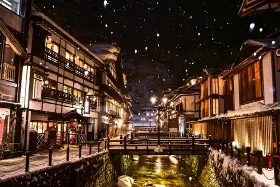
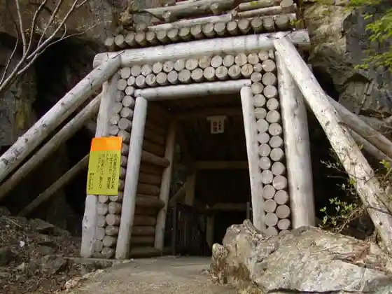
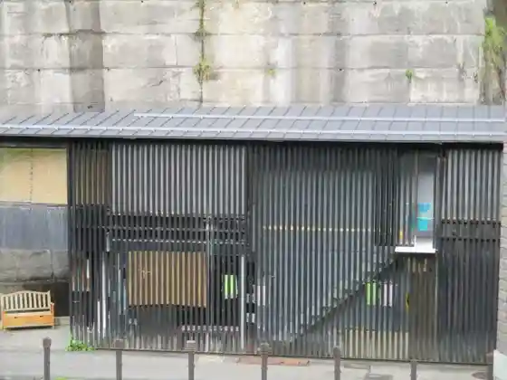
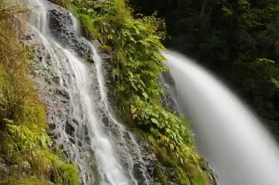

Ginzan Onsen
Obanazawa, Yamagata · 0237-28-3933 · Official / source link

Nobezawa Ginzan Iseki
Obanazawa, Yamagata · 0237-22-1111 · Official / source link

Shirogane Yu
Obanazawa, Yamagata · 0237-28-3933 · Official / source link

Hakugin Falls
Obanazawa, Yamagata · 0237-28-3933 · Official / source link

Toku Ryo Mizumi
Obanazawa, Yamagata · 0237-22-1111 · Official / source link
Roadside Station (Obanazawa) Karyu no Sato Nemaru
Obanazawa, Yamagata · 0237-24-3535 · Official / source link
Ginzan Onsen (Taisho Roman Kan)
Obanazawa, Yamagata · 0237-53-6727 · Official / source link
Hayuga
Obanazawa, Yamagata · Official / source link
Hanagasa Basu
Obanazawa, Yamagata · 0237-22-2206 · Official / source link
Obanazawa
Obanazawa, Yamagata · 0237-22-1111 · Official / source link
Sambirejji Toku Ryo Mizumi Oto Campground
Obanazawa, Yamagata · 0237-23-2111 · Official / source link
Toku Ryo Mizumi Yotto Experience
Obanazawa, Yamagata · Official / source link
Oku no Hoso Michi Obanazawa Soba Kaido
Obanazawa, Yamagata · 0237-22-1819 · Official / source link
Nogawa Tofu
Obanazawa, Yamagata · Official / source link
Hozawa Yama Yakushiji (Soto Shu) / Saijo Sanju San Kannon Dai 24 Ban Ue no Hatake Kannon
Obanazawa, Yamagata · Official / source link
Senshin Kyo (Monju Tani)
Obanazawa, Yamagata · 0237-22-1111 · Official / source link
Hakugin Park
Obanazawa, Yamagata · 0237-22-1111 · Official / source link
Ginzan Kokeshi (Oshinkokeshi)
Obanazawa, Yamagata · 0237-28-2161 · Official / source link
Gosho Shrine
Obanazawa, Yamagata · 0237-22-1111 · Official / source link
Basho, Seifu History Museum (Suzuki Ie House)
Obanazawa, Yamagata · 0237-22-0104 · Official / source link
Ginzan Kawa
Obanazawa, Yamagata · 090-5848-3287 · Official / source link
Guzei Sanyo Izumi Tera
Obanazawa, Yamagata · 0237-22-0669 · Official / source link
(Oku no Hosomichi) Yamagatana Batsu Togegoe
Obanazawa, Yamagata · 0237-22-1111 · Official / source link
Toku Ryo Mizumi Onsen Karyu Baths
Obanazawa, Yamagata · 0237-24-1160 · Official / source link
Gosho no Mizu Park Hasu no Hanahata
Obanazawa, Yamagata · Official / source link
Myodai Soba Tokoro Fukuhara Ya
Obanazawa, Yamagata · 0237-22-0035 · Official / source link
Guzei Yama Yo Izumi Tera (Tendai Shu) / Saijo Sanju San Kannon Dai 25 Ban Obanazawa Kannon
Obanazawa, Yamagata · Official / source link
Gosho Yama (Tsuruko Kuchi Sounkyo, Kurabi, Minami Gosho Yama Juso, Kojin)
Obanazawa, Yamagata · 0237-22-1111 · Official / source link
Karyu Kogen Ski Area
Obanazawa, Yamagata · 0237-22-1111 · Official / source link
Fujiya
Obanazawa, Yamagata · Official / source link
Ginzan Onsen no Kariipan
Obanazawa, Yamagata · 0237-53-6727 · Official / source link
Fuki Garasu Kyoshitsu / Obanazawa
Obanazawa, Yamagata · 0237-22-1811 · Official / source link
Suika Sofutokuriimu
Obanazawa, Yamagata · 0237-24-3535 · Official / source link
Obanazawa Kanko Bussan Kyokai
Obanazawa, Yamagata · Official / source link
Soba Tokoro Akitomo Iori
Obanazawa, Yamagata · 0237-53-0802 · Official / source link
Niitsuru Ko Dam
Obanazawa, Yamagata · 0237-28-3381 · Official / source link
Ue no Hatake Yaki Togei Etsuke Ke Kyoshitsu / Obanazawa
Obanazawa, Yamagata · 0237-28-2159 · Official / source link
Jo Kanayama Ki Kaku Tera (Jodoshinshu) / Saijo Sanju San Kannon Dai 21 Ban Goju Sawa Kannon
Obanazawa, Yamagata · Official / source link
Obane Sanchoku Kan (Haitto)
Obanazawa, Yamagata · 0237-22-2211 · Official / source link
Toku Ryo Mizumi Saikuringukosu
Obanazawa, Yamagata · 0237-22-1111 · Official / source link
Onjuku Yanada Ya
Obanazawa, Yamagata · Official / source link
Ginzan So
Obanazawa, Yamagata · Official / source link
Sounkyo no Shinryoku, Autumn Leaves
Obanazawa, Yamagata · 0237-22-1111 · Official / source link
Suwa Shrine (Obanazawa)
Obanazawa, Yamagata · 0237-22-1111 · Official / source link
Nobezawa Castle Ruins (Ichimei Kiriyama Shiro)
Obanazawa, Yamagata · 0237-22-1111 · Official / source link
Buna Kyosei Forest
Obanazawa, Yamagata · Official / source link
Sobaya Takumi
Obanazawa, Yamagata · 0237-23-3033 · Official / source link
Takahashi no Tanada (Obanazawa Takahashi)
Obanazawa, Yamagata · 0237-22-1111 · Official / source link
Takao Yama Hannya In (Tendai Shu) / Saijo Sanju San Kannon Dai 30 Ban Tanjo Village Kannon
Obanazawa, Yamagata · Official / source link
Omokage Sono
Obanazawa, Yamagata · Official / source link
Sounkyo
Obanazawa, Yamagata · 0237-22-1111 · Official / source link
Garasu Workshop
Obanazawa, Yamagata · 0237-22-1811 · Official / source link
Teuchi Soba Taka Hashi
Obanazawa, Yamagata · 0237-22-0460 · Official / source link
Kameya (Chukaryori)
Obanazawa, Yamagata · Official / source link
Sakana no Kakohin (Koi Ugui Nishin)
Obanazawa, Yamagata · Official / source link
Soba Tokoro Takimi Kan
Obanazawa, Yamagata · Official / source link
Shoun Yama Ryu Go Tera (Soto Shu) / Saijo Sanju San Kannon Dai 22 Ban Nobezawa Kannon
Obanazawa, Yamagata · Official / source link
Hachiman Shrine (Obanazawa Ginzan Onsen)
Obanazawa, Yamagata · 0237-22-1111 · Official / source link
Hotaru Village Gobo no
Obanazawa, Yamagata · 0237-23-4567 · Official / source link
Hatago Itoya
Obanazawa, Yamagata · Official / source link
Mokichi Kahi (Obanazawa)
Obanazawa, Yamagata · 0237-22-1111 · Official / source link
Resutoran Toku Ryo Mizumi
Obanazawa, Yamagata · 0237-23-2989 · Official / source link
Shokuji Tokoro Kashiwa Ya
Obanazawa, Yamagata · Official / source link
Chukaryori Showa Shokudo
Obanazawa, Yamagata · Official / source link
Karinto Manju
Obanazawa, Yamagata · Official / source link
Kotaku Yama Ensho Tera (Soto Shu) / Saijo Sanju San Kannon Dai 23 Ban Rokusawa Kannon
Obanazawa, Yamagata · Official / source link
Kotaku Yama Ensho Tera
Obanazawa, Yamagata · 0237-28-2319 · Official / source link
Hana Mura Yama Nen Tori Tera
Obanazawa, Yamagata · 0237-22-1111 · Official / source link
Toku Ryo Kohan Tenisukoto
Obanazawa, Yamagata · 0237-23-2989 · Official / source link
Kabocha Pai
Obanazawa, Yamagata · Official / source link
Yuki Ori Wagyu Obanazawa
Obanazawa, Yamagata · Official / source link
Soba Sake Tokoro Izu no Hana
Obanazawa, Yamagata · Official / source link
Nobesawa Noto Shu Oyobi Totomi Shu Hakasho / Ryu Go Tera
Obanazawa, Yamagata · 0237-22-1111 · Official / source link
Soba Tokoro Tsuruko
Obanazawa, Yamagata · 0237-28-3041 · Official / source link
Ozan (Nakazawa Kuchi)
Obanazawa, Yamagata · 0237-22-0433 · Official / source link
Ginzan Dam
Obanazawa, Yamagata · 0237-22-1111 · Official / source link
Basho Kensho Hi
Obanazawa, Yamagata · 0237-22-1111 · Official / source link
Saru Hane Doraibuin
Obanazawa, Yamagata · 0237-25-2766 · Official / source link
Hachiman Shrine (Obanazawa Yoko Town)
Obanazawa, Yamagata · 0237-22-1111 · Official / source link
10 Wari Soba Obanazawa
Obanazawa, Yamagata · Official / source link
Toku Ryo Mizumi no Sakura Kairo
Obanazawa, Yamagata · Official / source link
Ni Tsu Mori
Obanazawa, Yamagata · 0237-28-2111 · Official / source link
Nabe Koshinuma
Obanazawa, Yamagata · 0237-22-1111 · Official / source link
Oyachi Numa
Obanazawa, Yamagata · 0237-22-1111 · Official / source link
Suzuki Seifu Oyobi Irie Tame Seki no Haka / Nen Tori Tera
Obanazawa, Yamagata · 0237-22-1111 · Official / source link
Aku Toya Shiki Ato
Obanazawa, Yamagata · 0237-22-1111 · Official / source link
Basho Kuhi Suzushi Tsuka / Yo Izumi Tera
Obanazawa, Yamagata · 0237-22-1111 · Official / source link
Kokeshi Etsuke Ke / Obanazawa
Obanazawa, Yamagata · 0237-28-2377 · Official / source link
Haru no Sansai Tori Experience
Obanazawa, Yamagata · Official / source link
Hitokuchi Yubeshi
Obanazawa, Yamagata · 0237-28-2588 · Official / source link
Shoun Yama Ryu Go Tera
Obanazawa, Yamagata · 0237-28-2331 · Official / source link
Nobesawa Satsuma Shu no Hakasho / Ensho Tera
Obanazawa, Yamagata · 0237-22-1111 · Official / source link
Tokura Sushi
Obanazawa, Yamagata · Official / source link
Ue no Hatake Yaki
Obanazawa, Yamagata · 0237-28-2159 · Official / source link
Sandoburasuto Handoguraviiru Sutendogurasu Experience
Obanazawa, Yamagata · 0237-22-1298 · Official / source link
Orui Buruberii Sono Tsumi Tori Experience
Obanazawa, Yamagata · 0237-23-2478 · Official / source link
Soba Tokoro Benibana Iori
Obanazawa, Yamagata · Official / source link
Shina Soba Ichi Ban
Obanazawa, Yamagata · 0237-22-0137 · Official / source link
Jaku Hatake Numa Tetsugyo Seisokuchi
Obanazawa, Yamagata · 0237-22-1111 · Official / source link
Nobezawa Castle Ruins no Sugi
Obanazawa, Yamagata · 0237-22-1111 · Official / source link
Hachiman Shrine (Obanazawa)
Obanazawa, Yamagata · 0237-22-0578 · Official / source link
Ryu Go Terayama Mon
Obanazawa, Yamagata · 0237-28-2331 · Official / source link
Hei Sawa
Obanazawa, Yamagata · 0237-22-1111 · Official / source link
Tenshi Tsuka
Obanazawa, Yamagata · 0237-22-1111 · Official / source link
Obanazawa Ushi Ramen
Obanazawa, Yamagata · 0237-22-0128 · Official / source link
Pesorazuke
Obanazawa, Yamagata · Official / source link
Obanazawa Gyuniku Man
Obanazawa, Yamagata · 0237-24-3535 · Official / source link
Kisoba Chaya
Obanazawa, Yamagata · 0237-22-2081 · Official / source link
Suika no Kotsu Ko
Obanazawa, Yamagata · Official / source link
Yamafuku Doraibuin
Obanazawa, Yamagata · 0237-25-2407 · Official / source link
Kato Ya
Obanazawa, Yamagata · Official / source link
Goju Sawa Kannon
Obanazawa, Yamagata · 0237-22-2582 · Official / source link
Nobezawa Kannon
Obanazawa, Yamagata · 0237-28-2331 · Official / source link
Obanazawa Sports Park Promenade
Obanazawa, Yamagata · 0237-22-1111 · Official / source link
Sasanishiki Doraibuin
Obanazawa, Yamagata · 0237-25-2433 · Official / source link
Zundan Mochi
Obanazawa, Yamagata · 0237-22-1819 · Official / source link
Obana Ya
Obanazawa, Yamagata · 0237-22-0267 · Official / source link
Chukaryori Take Hachi
Obanazawa, Yamagata · Official / source link
Wakaba Shokudo
Obanazawa, Yamagata · 01237-22-0845 · Official / source link
Basho no O Yado
Obanazawa, Yamagata · 0237-22-0178 · Official / source link
Chi Kyo Terayama Mon Oyobi Shoro
Obanazawa, Yamagata · 0237-22-1111 · Official / source link
Awayuki
Obanazawa, Yamagata · 0237-23-2734 · Official / source link
Rokusawa Kannon
Obanazawa, Yamagata · 0237-28-2319 · Official / source link
Obanazawa Kannon
Obanazawa, Yamagata · 0237-22-0669 · Official / source link
Kodai Beidai Fuku
Obanazawa, Yamagata · Official / source link
Chuka Ramen Sai Ryu
Obanazawa, Yamagata · 0237-23-4060 · Official / source link